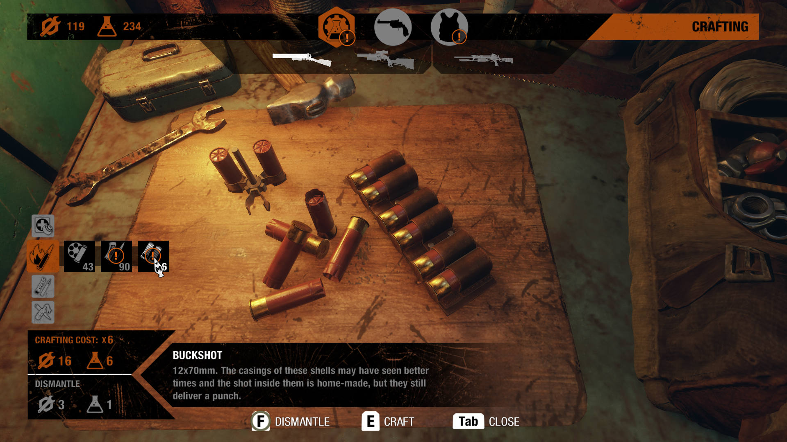
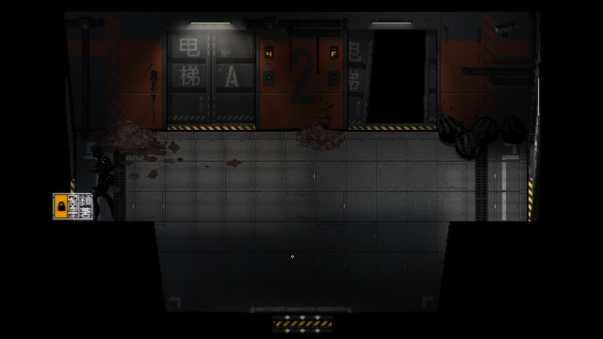
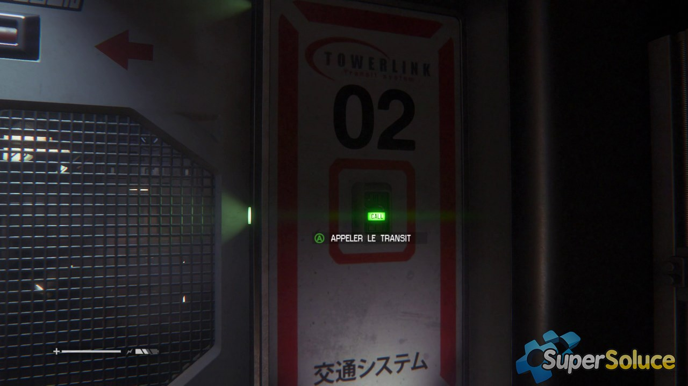
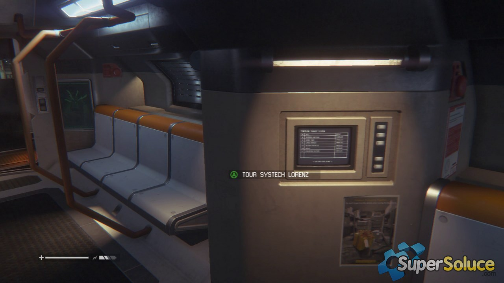
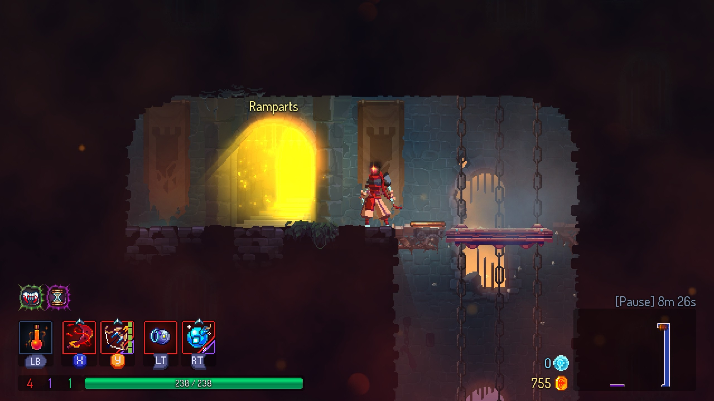
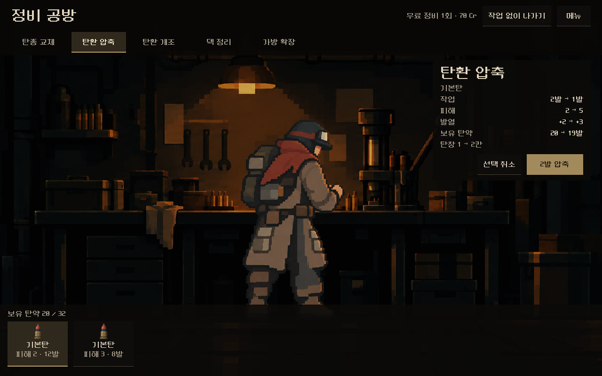
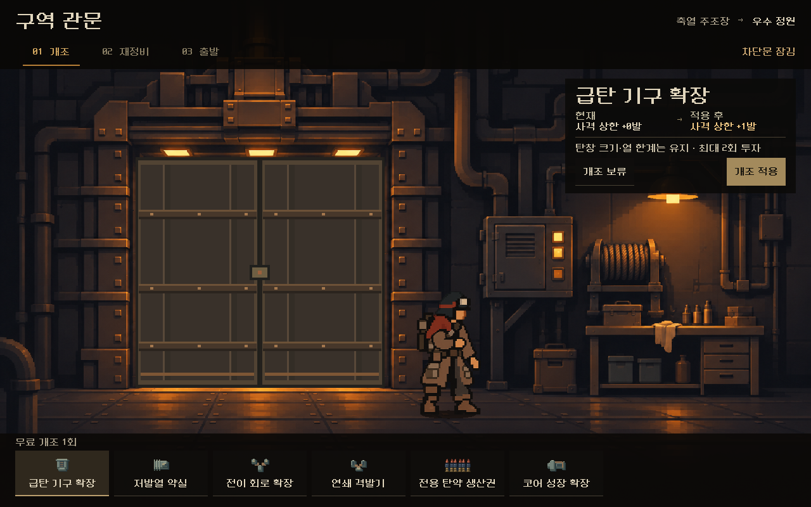

관문 레퍼런스
정비소에서 가져올 화면의 구성과, 관문에서 더 분명하게 보여 줄 조작·이동을 나누어 비교했다.
설비와 행동이 같은 화면에 있는 사례

Metro Exodus · 작업물과 비용
산탄과 공구가 장면 중심에 있다. 제작 비용과 명령은 주변에 놓여 지금 무엇을 다루는지 먼저 보인다.
관문에 적용 · 개조할 때 캐릭터의 시선과 손이 조작대를 향하고, 전후 수치는 그 옆에서 읽힌다.
PC Gamer 캡처 출처
SIGNALIS · 문 옆에서 읽는 상태
큰 층 번호와 문 옆 작은 표시등이 어두운 복도에서 먼저 눈에 들어온다.
관문에 적용 · 차단문 프레임에 작은 상태등과 상태 문구를 함께 둔다. 개조 중과 출발 가능 상태를 같은 자리에서 읽는다.
QooApp 캡처 출처

문 옆의 호출 버튼

탑승 뒤 표시되는 목적지Alien: Isolation · 호출과 이동
환승장 호출은 문 옆 버튼에서 시작하고, 탑승하면 같은 이동을 이어가는 목적지가 조작기 옆에 보인다.
관문에 적용 · 출발은 개조 목록과 떨어진 문 쪽 행동으로 둔다. 출발 직후에는 비교창이 물러나고 문이 열린다.
SuperSoluce 캡처 출처
Dead Cells · 목적지를 출구에 붙이기
다음 구역 이름이 빛나는 출구 바로 위에 있어, 어느 곳으로 가는지 장면 안에서 읽힌다.
관문에 적용 · 다음 구역 이름을 문 가까이에 놓고, 열린 문 너머에 다음 구역의 빛이나 실루엣을 짧게 보여 주는 안을 비교한다.
PC Gamer 캡처 출처우리 화면에 대조

본편 정비소
인물이 작업대를 향하고 있고, 작업 대상과 실행 버튼을 서로 가까운 곳에서 읽는다.

현 관문 시안
문과 조작대가 같은 장면에 있다. 조작대가 반응하는 시점과 다음 목적지를 보여 주는 위치는 더 구체화할 수 있다.
다음 시안에 가져갈 조합
작업할 때 · 정비소처럼 캐릭터와 조작대에 시선을 모으고, 개조 전후와 비용을 작은 패널에서 확인한다.
출발할 때 · 문 옆에 출발 동작을 두고, 확인 패널이 물러난 뒤 문과 다음 구역 이름이 중심이 된다.
게임 캡처 5장은 레퍼런스 비교용이다. 실제 게임 플레이 영상의 입력 타이밍이나 전환 길이는 이 자료에서 판단하지 않았다.